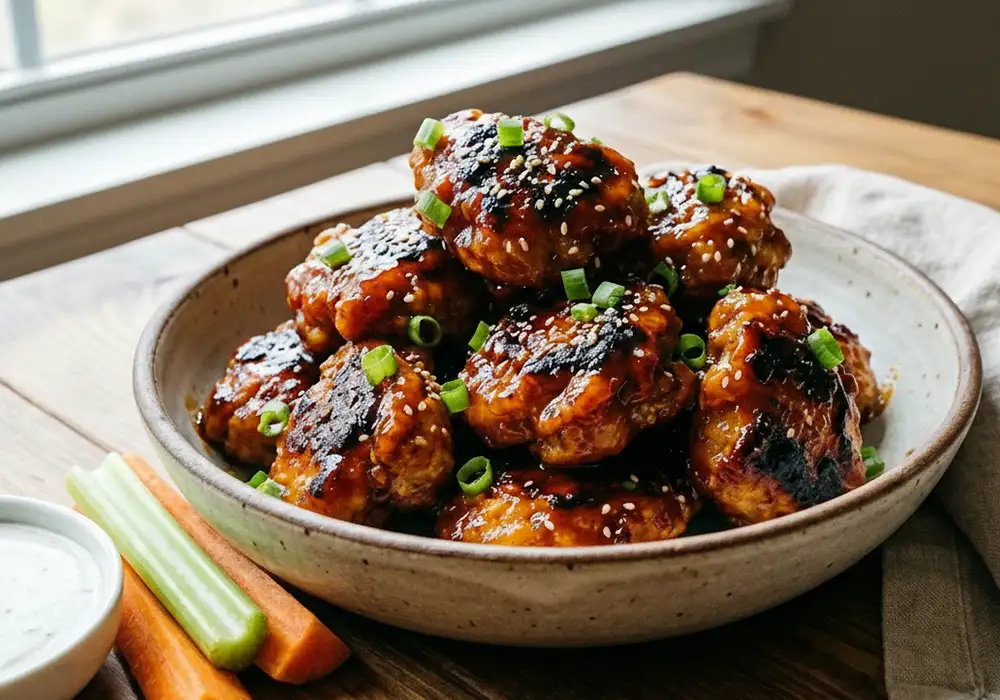

×
Especial Día del Padre: Boneless Crujientes de Pollo en Salsa BBQ

Junio es el mes de papá y no hay mejor manera de festejarlo que con una buena botana casera para disfrutar del fin de semana. Esta receta de boneless de pollo queda extremadamente crujiente por fuera, jugosa por dentro y bañada en una salsa BBQ que le va a encantar. ¡Manos a la obra!
🛒 Ingredientes
- Pechuga de pollo: 1 kg cortada en cubos de tamaño bocado.
- Harina de trigo: 1 taza.
- Fécula de maíz (Maizena): 1/2 taza (el secreto para que queden extra crujientes).
- Especias: 1 cucharadita de ajo en polvo, cebolla en polvo, pimentón dulce (paprika) y sal.
- Huevos: 2 piezas batidas.
- Salsa: Su salsa BBQ favorita para bañar al final.
👨🍳 Preparación Paso a Paso
1. Sazonar y Marinar: Seca muy bien los cubos de pollo con una toalla de papel. Sazónalos directamente con la sal, el ajo, la cebolla en polvo y la paprika para que agarren buen sabor desde el inicio.
2. El Doble Empanizado: Mezcla en un tazón la harina con la fécula de maíz. Pasa cada cubo de pollo primero por la harina, luego sumérgelo en el huevo batido y vuélvelo a pasar por la harina asegurándote de que quede completamente cubierto.
3. Cocción Perfecta: Cocina los trozos de pollo en aceite bien caliente o en freidora de aire a 200°C durante 12-15 minutos hasta que adquieran un tono dorado y una textura bien firme.
4. El Toque Final: Coloca los boneless crujientes en un tazón grande, vierte la salsa BBQ por encima y muévelos vigorosamente para que se impregnen por completo. Sírvelos inmediatamente acompañados de bastones de apio o zanahoria.
💡 Tip extra del chef: Puedes acompañarlos con un aderezo ranch tradicional para balancear el toque dulce de la salsa BBQ. ¡Buen provecho para papá!